Section 5.3 Some Basic Graphs
In this section we study the graphs of some important basic functions. Many functions fall into families or classes of similar functions, and recognizing the appropriate family for a given situation is an important part of modeling.
We'll need two new algebraic operations.
Subsection Cube Roots
You are familiar with square roots. Every non-negative number has two square roots, defined as follows.
There are several other kinds of roots, one of which is called the cube root. We define the cube root as follows.
Definition 5.45. Cube Root.
\(b\) is the cube root of \(a\) if \(b\) cubed equals \(a\text{.}\) In symbols, we write
Square roots of negative numbers are not real (they are complex), but every real number has a real cube root. For example,
Simplifying radicals occupies the same position in the order of operations as computing powers: after parentheses, and before products and quotients.
Example 5.46.
Simplify each expression.
\(\displaystyle 3\sqrt[3]{-8}\)
\(\displaystyle 2-\sqrt[3]{-125}\)
\(\displaystyle 3\sqrt[3]{-8}=3(-2)=-6\)
\(\displaystyle 2-\sqrt[3]{-125}=2-(-5)=7\)
Checkpoint 5.47. Practice 1.
Checkpoint 5.48. QuickCheck 1.
True or False.
A negative number has a negative cube root.
True
False
A negative number has a negative square root.
True
False
A positive number has a negative square root.
True
False
A positive number has a negative cube root.
True
False
Note 5.49.
We can use the calculator to find cube roots as follows. Press the MATH key to get a menu of options. Option 4 is labeled \(\sqrt[3]{~~}\text{;}\) this is the cube root key. To find the cube root of, say, 15.625, we key in
\(\qquad\qquad\) MATH 4 \(15.625\) ) ENTER
and the calculator returns the result, 2.5. Thus, \(\sqrt[3]{15.625} = 2.5\text{.}\) You can check this result by verifying that \(~2.5^3=15.625\text{.}\)
Subsection Absolute Value
We use the absolute value to discuss problems involving distance. For example, consider the number line below. Starting at the origin, we travel in opposite directions to reach the two numbers \(6\) and \(-6\text{,}\) but the distance we travel in each case is the same.

The distance from a number \(c\) to the origin is called the absolute value of \(c\text{,}\) denoted by \(\abs{c}\text{.}\) Because distance is never negative, the absolute value of a number is always positive (or zero). Thus, \(\abs{6}= 6\) and \(\abs{-6} = 6\text{.}\) In general, we define the absolute value of a number \(x\) as follows.
Definition 5.50. Absolute Value.
The absolute value of \(x\) is defined by
This definition is called piecewise, because the formula has two pieces. It says that the absolute value of a positive number (or zero) is the same as the number. To find the absolute value of a negative number, we take the opposite of the number, which is then positive. For instance,
Checkpoint 5.51. QuickCheck 2.
If \(\left| x \right| =-x \text{,}\) what can you say about \(x \text{?}\)
\(x \) must be zero.
\(x \) must be negative.
\(x \) must be zero or negative.
This cannot happen for any value of \(x \text{.}\)
Absolute value bars act like grouping devices in the order of operations: you should complete any operations that appear inside absolute value bars before you compute the absolute value.
Example 5.52.
Simplify each expression.
\(\displaystyle \abs{3 - 8}\)
\(\displaystyle \abs{3} - \abs{8}\)
-
We simplify the expression inside the absolute value bars first.
\begin{equation*} \abs{3 - 8} = \abs{-5} = 5 \end{equation*} -
We simplify each absolute value; then subtract.
\begin{equation*} \abs{3} - \abs{8} = 3 - 8 = -5 \end{equation*}
Checkpoint 5.53. Practice 2.
Checkpoint 5.54. QuickCheck 3.
Subsection Eight Basic Graphs
Most of the graphs in this section will be new to you, but many useful graphs are variations of the eight basic functions shown below.
Consider the first pair of graphs. You have already studied the graph of \(f(x)=x^2\text{,}\) the basic parabola. Compare that graph with the graph of \(g(x)=x^3\text{.}\) Notice several differences in the shape of the two graphs. Once you have a good idea of the shape of a graph, up can make a quick sketch with just a few "guide points." For these two graphs, complete a short table of values to find useful guide points:
| \(x\) | \(-2\) | \(-1\) | \(0\) | \(1\) | \(2\) |
| \(f(x)\) | \(\qquad\) | \(\qquad\) | \(\qquad\) | \(\qquad\) | \(\qquad\) |
| \(g(x)\) | \(~~\) | \(~~\) | \(~~\) | \(~~\) | \(~~\) |
The next pair of graphs are \(f(x)=\sqrt{x}\) and \(g(x)=\sqrt[3]{x}\text{.}\) Once again, notice the differences in the two graphs. For example, we cannot take the square root of a negative number, but we can take its cube root. How is this reflected in the graphs?
The next pair of functions, \(f(x)=\dfrac{1}{x}\) and \(g(x)=\dfrac{1}{x^2}\text{,}\) are both undefined at \(x=0\text{,}\) so thier graphs do not include any points with \(x\)-coordinate zero. For very small positive values of \(x\text{,}\) both \(f(x)\) and \(g(x)\) get very large. As \(x\) gets closer to zero, the graphs approach the vertical line \(x=0\) (the \(y\)-axis). This line is called a vertical asymptote for the graph.
Also, notice that for very large values of \(x\text{,}\) both \(f(x)\) and \(g(x)\) get very close to zero. Their graphs approach the horizontal line \(y=0\) (the \(x\)-axis). This line is called the horizontal asymptote for the graph.
Finally, compare the familiar graph of \(f(x)=x\) with the graph of \(g(x)=\abs{x}\text{.}\) The piecewise definition of \(\abs{x}\) means that we graph \(y=x\) in the first quadrant (where \(x \ge 0\)), and \(y=-x\) in the first quadrant \(x \lt 0\)). The result is the V-shaped graph shown below.
Because they are fundamental to further study of mathematics and its applications, you should become familiar with the properties of these eight graphs, and be able to sketch them easily from memory, using their basic shapes and a few guidepoints.
Exercises Problem Set 5.3
Warm Up
1.
Evaluate each function.
\(\displaystyle f(x)=-2x^3-3x^2;~~f(-2)\)
\(\displaystyle g(x)=\dfrac{x-1}{x^2+2x};~~g(-1)\)
Exercise Group.
For Problems 2 and 3, compute each cube root. Round your answers to three decimal places if necessary. Verify your answers by cubing them.
2.
\(\displaystyle \sqrt[3]{512}\)
\(\displaystyle \sqrt[3]{-125}\)
\(\displaystyle \sqrt[3]{-0.064}\)
\(\displaystyle \sqrt[3]{1.728}\)
3.
\(\displaystyle \sqrt[3]{9}\)
\(\displaystyle \sqrt[3]{258}\)
\(\displaystyle \sqrt[3]{-0.02}\)
\(\displaystyle \sqrt[3]{-3.1}\)
Exercise Group.
For Problems 4–6, simplify each by following the order of operations.
4.
\(\displaystyle \dfrac{6-2\sqrt[3]{64}}{2}\)
\(\displaystyle 2\sqrt[3]{-125}-\sqrt[3]{6^2-3^2}\)
5.
\(\displaystyle \sqrt[3]{\dfrac{8-1}{64-8}}\)
\(\displaystyle \dfrac{4+\sqrt[3]{-216}}{8-\sqrt[3]{8}}\)
6.
\(\displaystyle \sqrt[3]{3^3+4^3+5^3}\)
\(\displaystyle \sqrt[3]{9^3+10^3-1^3}\)
Exercise Group.
For problems 7–10, simplify the expression according to the order of operations.
7.
\(\displaystyle -\abs{-9} \)
\(\displaystyle -(-9) \)
\(\displaystyle 2-(-6) \)
\(\displaystyle 2-\abs{-6} \)
8.
\(\displaystyle \abs{-8}-\abs{12} \)
\(\displaystyle \abs{-8-12} \)
\(\displaystyle \abs{-3}+\abs{-5} \)
\(\displaystyle \abs{-3+(-5)} \)
9.
\(\displaystyle 4-9\abs{2-8} \)
\(\displaystyle 2-5\abs{-6-3} \)
\(\displaystyle \abs{-4-5} \abs{1-3(-5)} \)
10.
\(\displaystyle \abs{-3+7}\abs{-2(6-10)} \)
\(\displaystyle \abs{ \abs{-5}-\abs{-6}} \)
\(\displaystyle \abs{ \abs{4}-\abs{-6}} \)
Skills Practice
Exercise Group.
For Problems 11–16, sketch the graph of the function by hand, paying attention to the shape of the graph. Carefully plot at least three “guide points” to ensure accuracy. If possible, plot the points with x-coordinates \(-1, ~0,\) and \(1\text{.}\)
11.
\(f(x)=x^3\)

12.
\(f(x)=\abs{x}\)
13.
\(f(x)=\sqrt{x}\)
14.
\(f(x)=\sqrt[3]{x}\)
15.
\(f(x)=\dfrac{1}{x}\)
16.
\(f(x)=\dfrac{1}{x^2}\)
17.
Use your calculator to graph \(f(x)=x^2\) and \(g(x)=x^3\) on the same axes for \(0 \le x \le 1\text{.}\) Which function is greater on that interval?
Use your calculator to graph \(f(x)=\sqrt{x}\) and \(g(x)=\sqrt[3]{x}\) on the same axes for \(0 \le x \le 1\text{.}\) Which function is greater on that interval?
18.
Use your calculator to graph \(f(x)=\dfrac{1}{x}\) and \(g(x)=\dfrac{1}{x^2}\) on the same axes for \(0 \le x \le 1\text{.}\) Which function is greater on that interval?
Use your calculator to graph \(f(x)=\dfrac{1}{x}\) and \(g(x)=\dfrac{1}{x^2}\) on the same axes for \(1 \le x \le 4\text{.}\) Which function is greater on that interval?
Applications
19.
Use the graph of \(y=\dfrac{1}{x}\) to solve the inequality \(\dfrac{1}{x} \le 2\text{.}\)
20.
Use the graph of \(y=\abs{x-2}\) to solve the inequality \(\abs{x-2} \gt 1\text{.}\)
Exercise Group.
For Problems 21–26, graph the functions in the same window on your calculator. Describe how the graphs in parts (b) and (c) are different from the basic graph.
21.
\(\displaystyle f(x)=x^3\)
\(\displaystyle g(x)=x^3-2\)
\(\displaystyle h(x)=x^3+1\)
22.
\(\displaystyle f(x)=\abs{x}\)
\(\displaystyle g(x)=\abs{x-2}\)
\(\displaystyle h(x)=\abs{x+1}\)
23.
\(\displaystyle f(x)=\dfrac{1}{x}\)
\(\displaystyle g(x)=\dfrac{1}{x+1.5}\)
\(\displaystyle h(x)=\dfrac{1}{x-1}\)
24.
\(\displaystyle f(x)=\dfrac{1}{x^2}\)
\(\displaystyle g(x)=\dfrac{1}{x^2}+2\)
\(\displaystyle h(x)=\dfrac{1}{x^2}-1\)
25.
\(\displaystyle f(x)=\sqrt{x}\)
\(\displaystyle g(x)=-\sqrt{x}\)
\(\displaystyle h(x)=\sqrt{-x}\)
26.
\(\displaystyle f(x)=\sqrt[3]{x}\)
\(\displaystyle g(x)=-\sqrt[3]{x}\)
\(\displaystyle h(x)=\sqrt[3]{-x}\)
27.
Match each graph with its equation.

\(\displaystyle f(x)=3\sqrt{x}\)
\(\displaystyle f(x)=2x^3\)
\(\displaystyle f(x)=\dfrac{x}{3}\)
\(\displaystyle f(x)=\dfrac{3}{x}\)
\(\displaystyle f(x)=2\sqrt[3]{x}\)
\(\displaystyle f(x)=3x^2\)
28.
Match each graph with its equation.

\(\displaystyle f(x)=x^3-2\)
\(\displaystyle f(x)=\sqrt[3]{x}+2\)
\(\displaystyle f(x)=\dfrac{1}{(x-3)^2}\)
\(\displaystyle f(x)=\abs{x}-3\)
\(\displaystyle f(x)=x^2+3\)
\(\displaystyle f(x)=\sqrt{x+3}\)
Exercise Group.
For Problems 29 and 30, each graph is a variation of one of the eight basic graphs. Identify the basic graph for each.
29.
- 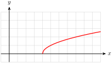
- 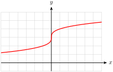
- 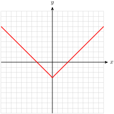
- 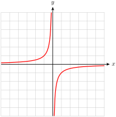
- 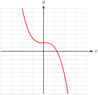
- 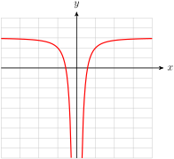
30.
- 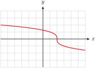
- 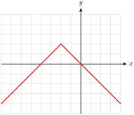
- 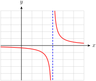
- 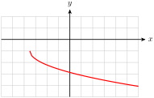
- 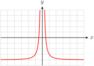
- 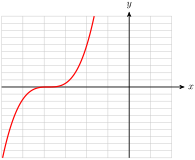
Exercise Group.
For Problems 31 and 32, use the graph to estimate the solutions to the inequalities.
31.
The figure shows a graph of \(g(x) = \dfrac{4}{x+2}\text{.}\)
\(\displaystyle g(x) \gt 1\)
\(\displaystyle g(x) \lt 3\)
32.
The figure shows a graph of \(H(z) = 4\sqrt[3]{z-4}+6\text{.}\)
\(\displaystyle H(z) \gt 14\)
\(\displaystyle H(z) \lt 6\)
Exercise Group.
For Problems 33 and 34, graph the function in the window
Use the graph to solve each equation or inequality. Check your solutions algebraically.
33.
Graph \(~~F(x) = 4\sqrt{x - 25}\text{.}\)
Solve \(~~4\sqrt{x - 25}=16\)
Solve \(~~4\sqrt{x - 25}=-16\)
Solve \(~~8\lt 4\sqrt{x - 25}\le 24\)
34.
Graph \(~~G(x) = 20 - 0.001(x - 8)^4 \text{.}\)
Solve \(~~20 - 0.001(x - 8)^4 =26.2\)
Solve \(~~20 - 0.001(x - 8)^4 =-8.561\)
Solve \(~~20 - 0.001(x - 8)^4 \ge 10\)